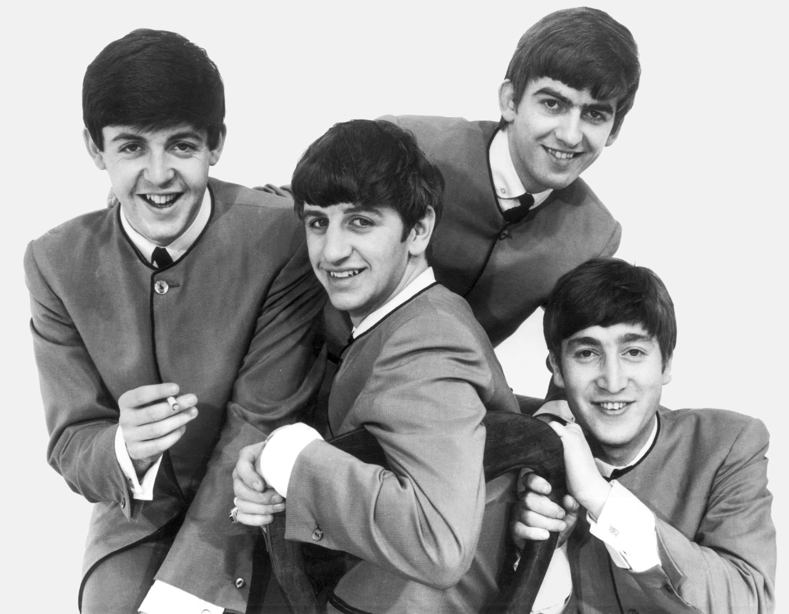
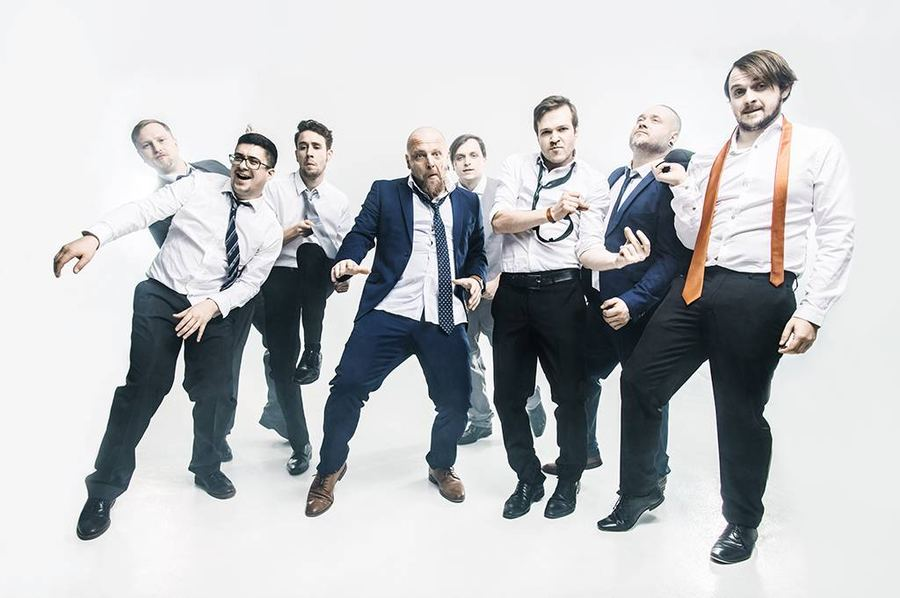
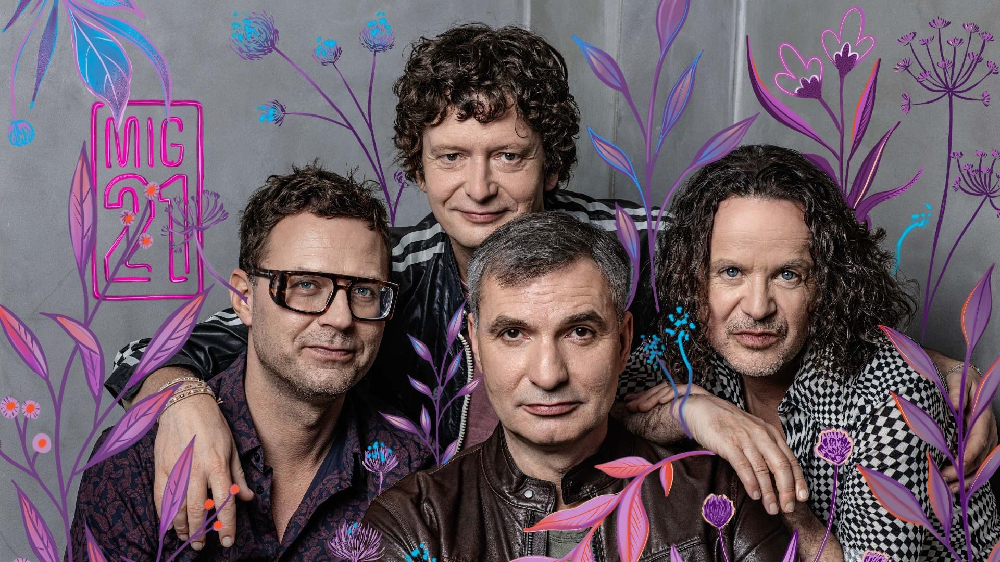
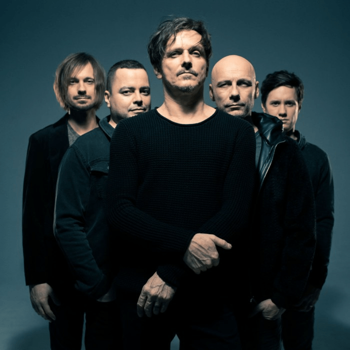

Prozkoumejte písně, které jsou součástí našich koncertů. Od známých hitů až po náš vlastní styl.
Výběr písniček pro Jarmilin Pozdní Sběr je proces, do kterého mluví celá kapela. Naším hlavním cílem je, aby hudba bavila nejen nás na pódiu, ale především lidi pod ním. Proto v našem seznamu skladeb nenajdete jen jeden vyhraněný styl, ale pestrý mix žánrů, které dokážou oslovit několik generací posluchačů. Každou převzatou skladbu navíc pečlivě upravujeme, aby seděla našemu nástrojovému složení a získala ten správný drive.
Domácí scéna je pro nás základ. České písničky mají tu obrovskou výhodu, že si je publikum může zpívat slovo od slova společně s námi. Zaměřujeme se proto na osvědčené rockové a popové pecky, které neodmyslitelně patří k vydařeným tancovačkám, hodovým zábavám i rodinným oslavám.
Když na pódiu přepneme do zahraničního režimu, čeká vás parádní cesta napříč hudebními dekádami a styly — od energického rock'n'rollu přes chytlavý pop šedesátých let až po akustický folk, irské rytmy a poctivé americké country.
Poznejte známé skladby a jejich původní interprety z našeho repertoáru.

The Beatles patří mezi nejvlivnější kapely hudební historie a formovali podobu moderního rocku a popu. V našem repertoáru mají hned osm písní.

Poletíme je česká kapela s osobitým, syrovým projevem a texty, které nezapřou smysl pro černý humor. V našem repertoáru mají hned pět písní — jedno z nejsilnějších zastoupení vůbec.

Mig 21 je oblíbená česká pop-rocková kapela známá svým osobitým stylem, humorem a nezaměnitelnou energií na pódiu pod vedením zpěváka Jiřího Macháčka.

Chinaski patří mezi nejúspěšnější české pop-rockové kapely. Jsou známí svými chytlavými melodiemi, energickými koncerty a texty, které oslovují posluchače napříč generacemi.